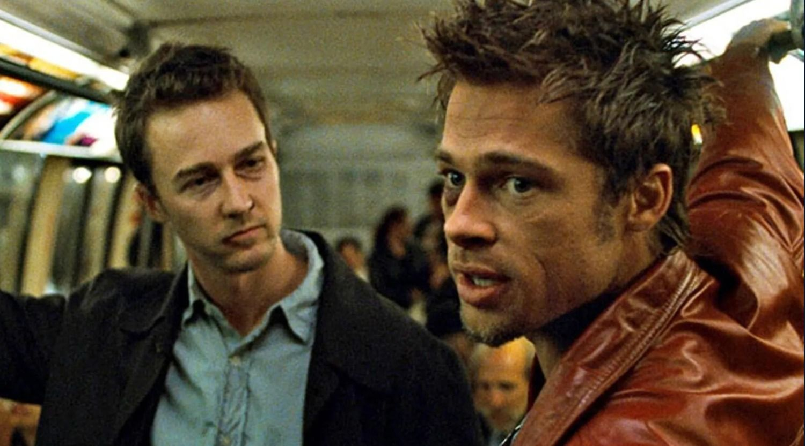
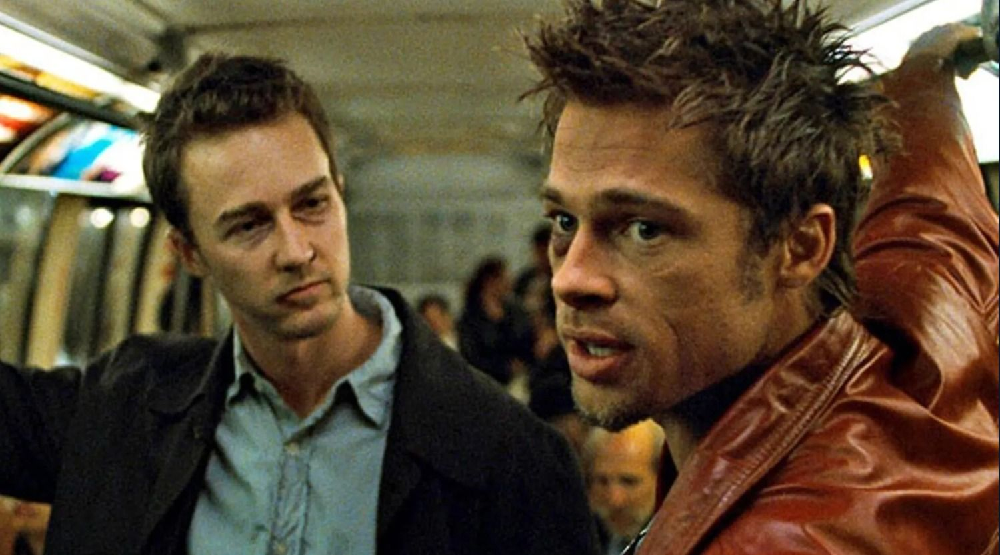
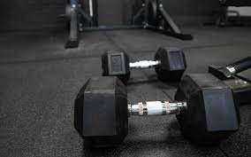
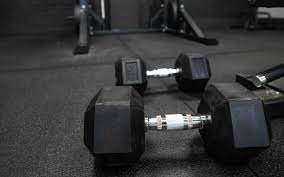

Fines de esta pagina
Hola soy Hector y en la pagina que traigo el dia de hoy comentare algunas aficiones y hobbies que realizo con frecuencia, esta pagina la realizo con fines explicativos y con la intencion de mostrar mis conocimientos sobre como utilizar el lenguaje de programacion para la creacion de paginas.
Que hobbies tengo?
Peliculas

 


Gym
el gym es una de las actividades que mas importancia le puse en la actualidad, empece a ir a inicios del a;o 2022 despues de la pandemia y es una de las actividades que mas me gustan hacer, es basicamente un compromiso autoimpuesto el cual le intento dedicar tiempo casi todos los dias de la semana, ya que ademas de ser bueno para mi salud ya que es actividad fisica, me ayuda mucho en algunos aspectos personales como mejorar los valores un ejemplo es la resposabilidad y el compromiso

 

Valorant
Claramente el mejor de KINAL